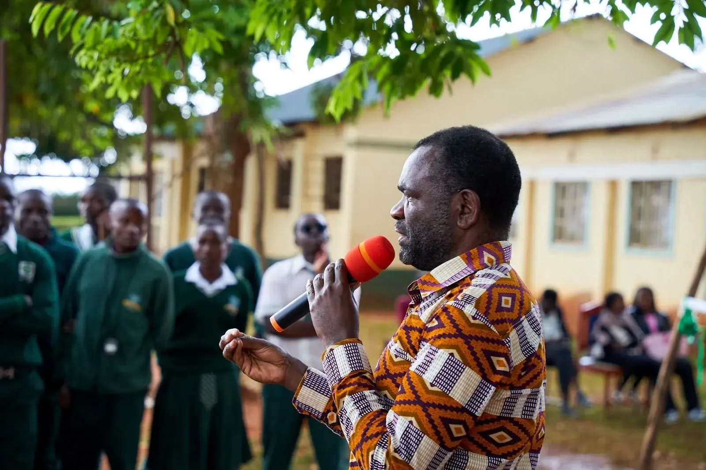
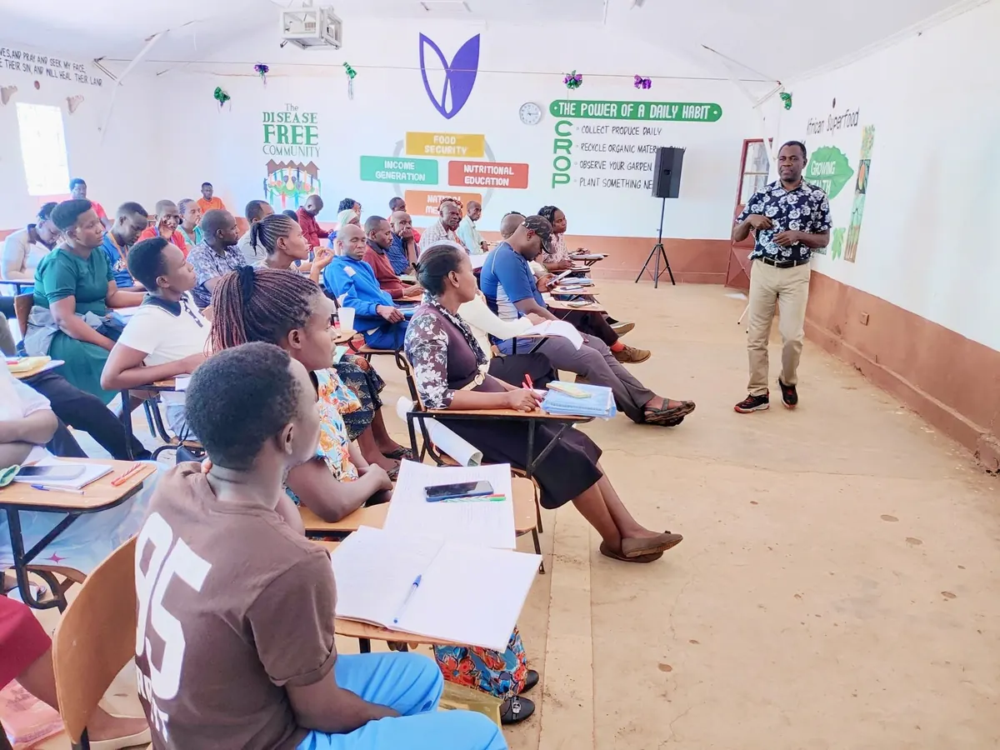

Dawson Mudenyo, Sauti Ya Kwanza
The voice of Kwanza.
Dawson Mudenyo is seeking the Kwanza Member of Parliament seat, to represent the communities he grew up among.
- Kwanza
- Keiyo
- Bidii
- Kapomboi


Born and raised in Lunyu.
The son of a Bishop. Dawson grew up among the people of Kwanza and is now seeking to represent them in Parliament.
- PrimaryLiyavo School
- SecondaryKitale Day High School
- LaterMissionary school, Chicago
Dawson in the community
From community meetings to farmer training and gatherings with village elders.



Programmes Dawson supports

Scholarship Programme
Supports 80 students through high school, with continued support intended as they progress to college.
Programme details
Borehole Drilling
Supports borehole drilling to improve access to water for communities and schools, with a target of 12 boreholes each year.
Programme details
School Feeding Programme
Supports a daily school feeding programme across approximately 30 schools.
Programme details
Uniform A Child
Identifies students who lack school uniforms and provides them, so they can attend school with confidence and dignity.
Programme details
Smart Agriculture & Farmer Support
Training and practical support for farmers, including connections between farmers and schools.
Programme details
Girls & Teen Mothers
Supports girls and teen mothers through rescue support, pad and hygiene training, and technical skills.
Programme detailsMeet Dawson. Raise an issue. Share an idea.
Community Connection takes about a minute. You choose what to share, and you can send your response without personal details.
Wards of Kwanza Constituency
- Kwanza
- Keiyo
- Bidii
- Kapomboi